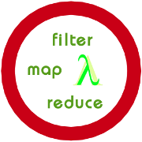

List Comprehension
Introduction

We learned in the previous chapter "Lambda Operator, Filter, Reduce and Map" that
Guido van Rossum perfers list comprehensions to constructs using map, filter, reduce and lambda. In this chapter
we will cover the essentials about list comprehensions. List comprehensions were added with Python 2.0.
Essentially, it is Python's way of implementing a well-known notation for sets
as used by mathematicians.
In mathematics the square numbers of the natural numbers are for example created
by { x2 | x ∈ ℕ } or the set of complex integers
Zahlen { (x,y) | x ∈ ℤ ∧ y ∈ ℤ }.
List comprehension is an elegant way to define and create
list in Python. These lists have often the qualities of sets, but are not in all cases
sets.
List comprehension is a complete substitute for the lambda function as well as the functions
map(), filter() and reduce(). For most people the syntax of list comprehension is easier
to be grasped.
Examples
In the chapter on lambda and map() we had designed a map() function to convert Celsius values into Fahrenheit and vice versa. It looks like this with list comprehension:>>> Celsius = [39.2, 36.5, 37.3, 37.8] >>> Fahrenheit = [ ((float(9)/5)*x + 32) for x in Celsius ] >>> print Fahrenheit [102.56, 97.700000000000003, 99.140000000000001, 100.03999999999999] >>>The following list comprehension creates the Pythagorean triples:
>>> [(x,y,z) for x in range(1,30) for y in range(x,30) for z in range(y,30) if x**2 + y**2 == z**2] [(3, 4, 5), (5, 12, 13), (6, 8, 10), (7, 24, 25), (8, 15, 17), (9, 12, 15), (10, 24, 26), (12, 16, 20), (15, 20, 25), (20, 21, 29)] >>>Cross product of two sets:
>>> colours = [ "red", "green", "yellow", "blue" ]
>>> things = [ "house", "car", "tree" ]
>>> coloured_things = [ (x,y) for x in colours for y in things ]
>>> print coloured_things
[('red', 'house'), ('red', 'car'), ('red', 'tree'), ('green', 'house'), ('green', 'car'), ('green', 'tree'), ('yellow', 'house'), ('yellow', 'car'), ('yellow', 'tree'), ('blue', 'house'), ('blue', 'car'), ('blue', 'tree')]
>>>
Generator Comprehension
Generator comprehensions were introduced with Python 2.6. They are simply a generator expression with a parenthesis - round brackets - around it. Otherwise, the syntax and the way of working is like list comprehension, but a generator comprehension returns a generator instead of a list.>>> x = (x **2 for x in range(20)) >>> print(x)at 0xb7307aa4> >>> x = list(x) >>> print(x) [0, 1, 4, 9, 16, 25, 36, 49, 64, 81, 100, 121, 144, 169, 196, 225, 256, 289, 324, 361]
A more Demanding Example
Calculation of the prime numbers between 1 and 100 using the sieve of Eratosthenes:>>> noprimes = [j for i in range(2, 8) for j in range(i*2, 100, i)] >>> primes = [x for x in range(2, 100) if x not in noprimes] >>> print primes [2, 3, 5, 7, 11, 13, 17, 19, 23, 29, 31, 37, 41, 43, 47, 53, 59, 61, 67, 71, 73, 79, 83, 89, 97] >>>We want to bring the previous example into more general form, so that we can calculate the list of prime numbers up to an arbitrary number n:
>>> from math import sqrt >>> n = 100 >>> sqrt_n = int(sqrt(n)) >>> no_primes = [j for i in range(2,sqrt_n) for j in range(i*2, n, i)]If we have a look at the content of no_primes, we can see, that we have a problem. There are lots of double entries contained in this list:
>>> no_primes [4, 6, 8, 10, 12, 14, 16, 18, 20, 22, 24, 26, 28, 30, 32, 34, 36, 38, 40, 42, 44, 46, 48, 50, 52, 54, 56, 58, 60, 62, 64, 66, 68, 70, 72, 74, 76, 78, 80, 82, 84, 86, 88, 90, 92, 94, 96, 98, 6, 9, 12, 15, 18, 21, 24, 27, 30, 33, 36, 39, 42, 45, 48, 51, 54, 57, 60, 63, 66, 69, 72, 75, 78, 81, 84, 87, 90, 93, 96, 99, 8, 12, 16, 20, 24, 28, 32, 36, 40, 44, 48, 52, 56, 60, 64, 68, 72, 76, 80, 84, 88, 92, 96, 10, 15, 20, 25, 30, 35, 40, 45, 50, 55, 60, 65, 70, 75, 80, 85, 90, 95, 12, 18, 24, 30, 36, 42, 48, 54, 60, 66, 72, 78, 84, 90, 96, 14, 21, 28, 35, 42, 49, 56, 63, 70, 77, 84, 91, 98, 16, 24, 32, 40, 48, 56, 64, 72, 80, 88, 96, 18, 27, 36, 45, 54, 63, 72, 81, 90, 99] >>>The solution to this intolerable problem comes with the set comprehension, which we will cover in the next section.
Set Comprehension
A set comprehension is similiar to a list comprehension, but returns a set and not a list. Syntactically, we use curly brackets instead of square brackets to create a set. Set comprehension is the right functionality to solve our problem from the previous subsection. We are able to create the set of non primes without doublets:
>>> from math import sqrt
>>> n = 100
>>> sqrt_n = int(sqrt(n))
>>> no_primes = {j for i in range(2,sqrt_n) for j in range(i*2, n, i)}
>>> no_primes
{4, 6, 8, 9, 10, 12, 14, 15, 16, 18, 20, 21, 22, 24, 25, 26, 27, 28, 30, 32, 33, 34, 35, 36, 38, 39, 40, 42, 44, 45, 46, 48, 49, 50, 51, 52, 54, 55, 56, 57, 58, 60, 62, 63, 64, 65, 66, 68, 69, 70, 72, 74, 75, 76, 77, 78, 80, 81, 82, 84, 85, 86, 87, 88, 90, 91, 92, 93, 94, 95, 96, 98, 99}
>>> primes = {i for i in range(n) if i not in no_primes}
>>> print(primes)
{0, 1, 2, 3, 5, 7, 11, 13, 17, 19, 23, 29, 31, 37, 41, 43, 47, 53, 59, 61, 67, 71, 73, 79, 83, 89, 97}
>>>
Recursive Function to Calculate the Primes
The following Python script uses a recursive function to calculate the prime numbers. It incorporates the fact, that it is enough to examine the multiples of the prime numbers up to the square root of n:
from math import sqrt
def primes(n):
if n == 0:
return []
elif n == 1:
return [1]
else:
p = primes(int(sqrt(n)))
no_p = {j for i in p for j in range(i*2, n, i)}
p = {x for x in range(2, n) if x not in no_p}
return p
print(primes(40))